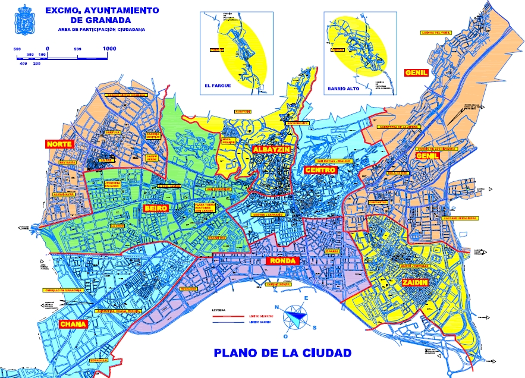
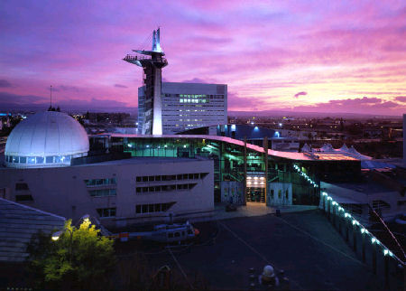
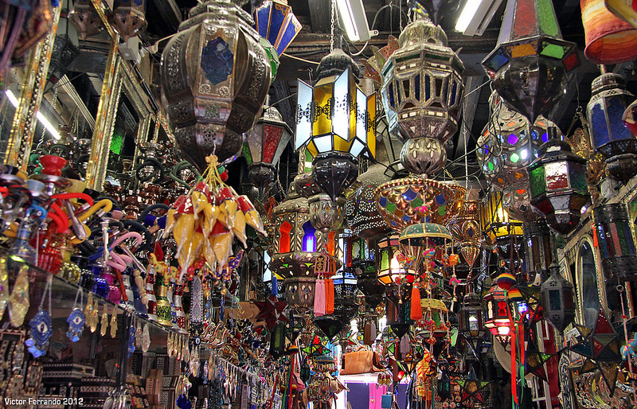
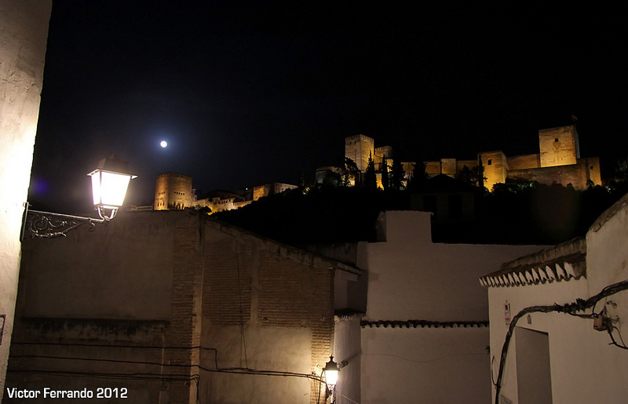

Barrios principales
Granada tiene 36 barrios, los más importantes son los siguientes:

La Chana
De los barrios de Granada, es uno de los mejores para ir de tapas, ya que en
La Chana abundan los bares de tapas, sitios muy frecuentados por turistas y locales.
Recorriendo el barrio se encontrarán numerosos bares, terrazas y locales, todos llenos de
gente disfrutando de exquisitas tapas. Las calles más concurridas de La Chana están cerca
de la Carretera de Málaga, y en las calles Delfín, Trucha, Salmón y Raya.
El Zaidín
Un barrio donde pueden encontrarse los centros de ciencia más sofisticados de
la ciudad, como el Instituto de Astrofísica de Andalucía y la Estación Experimental del Zaidín.
Este barrio de Granada también se caracteriza por haber recibido mucha población inmigrante
en los últimos tiempos, haciendo del barrio un sitio donde se fusionan muchas y muy diversas
culturas. El Festival más famoso del barrio es el “Festival de Rock de Zaidín”, el cual se
celebra al aire libre y marca el final del verano.

El Parque de las Ciencias de Andalucía-Granada es el primer museo interactivo de ciencia de
Andalucía (España). Fue inaugurado en mayo de 1995 ocupando en la actualidad 70 000 m². Está
situado en una zona céntrica de Granada y se ha convertido en uno de los principales reclamos
turísticos de la ciudad. Su construcción fue dirigida por el arquitecto Carlos Ferrater, Premio
Nacional de Arquitectura en 2009.
El Centro

En este barrio de Granada se encuentran algunos de los lugares más característicos
de la ciudad como la Alhambra de Granada, la Capilla Real (donde descansan los Reyes Católicos
Juana y Felipe), la Catedral, el Ayuntamiento, la Plaza de las Pasiegas, la Plaza Bib Rambla,
entre otros. De los barrios de Granada, el Centro posee la mayor actividad económica de la
ciudad. En el Centro se podrán encontrar todo tipo de comercios y tiendas, distribuidos en
las calles Mesones, Recogidas, Puentezuelas, Gran Vía de Colón, Acera del Darro y
Reyes Católicos.
Albaicín

Este barrio de Granada fue construido por los árabes antes de su expulsión, y en
él persisten numerosos monumentos renacentistas y Nazaristas como la Muralla Ziri,
el Arco de las Pesas, las Torres de la Alhacaba, la Iglesia de El Salvador
(antiguamente conocida como mezquita mayor), las antiguas mezquitas de San Cristóbal,
San Miguel Bajo, San José, San Gregorio, San Ildefonso y San Juan de los Reyes,
el Palacio de Dar-Alhorra, la casa de los Mascarones, la Casa de Yanguas, entre otras.
Sacromonte
Este barrio de Granada se encuentra en la región oriental de la capital granadina,
en el Valle de Valparaíso y frente a la famosa Alhambra, dos sitios que no se pueden dejar
de visitar en este barrio de Granada. Ambos se encuentran en cada una de las orillas del
río Darro, donde hay un bellísimo paraje conformado por un bosque mediterráneo y de ribera.
El barrio en sí es muy pintoresco, y en el lugar también puede visitarse la
Abadía del Sacromonte, donde actualmente se conservan los famosos Libros Plúmbeos,
devueltos por el Vaticano. Otro sitio que visitar en Sacromonte es la Abadía local.